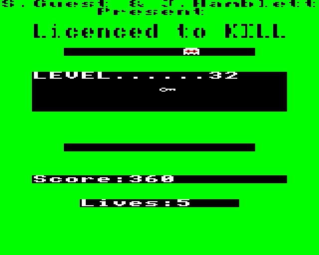
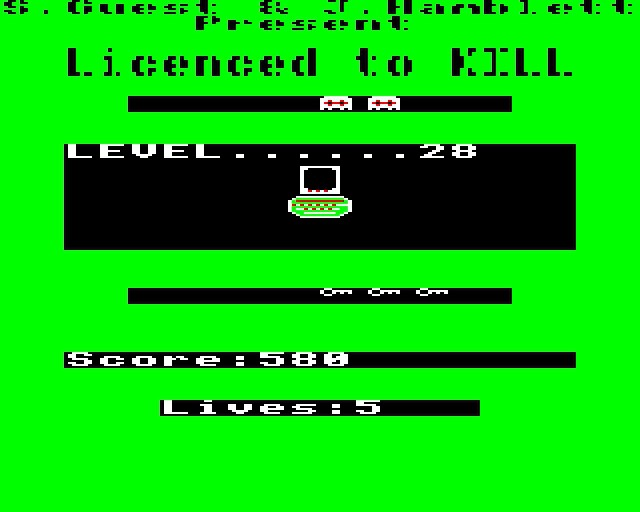
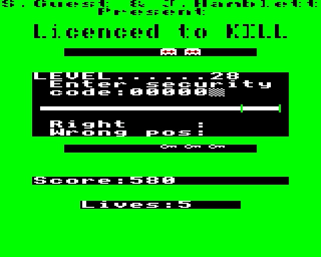
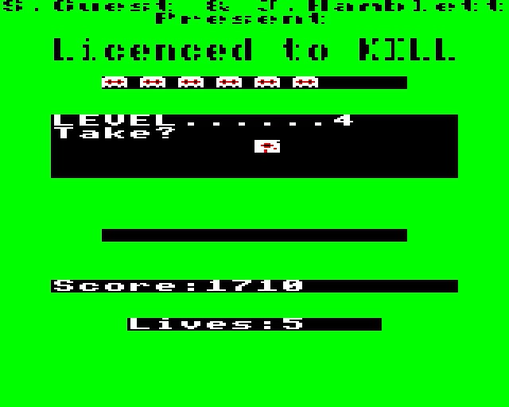
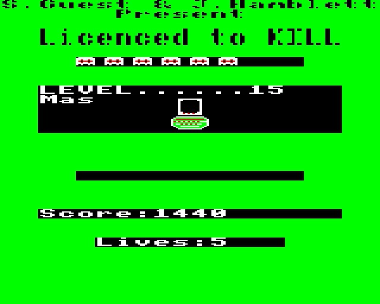
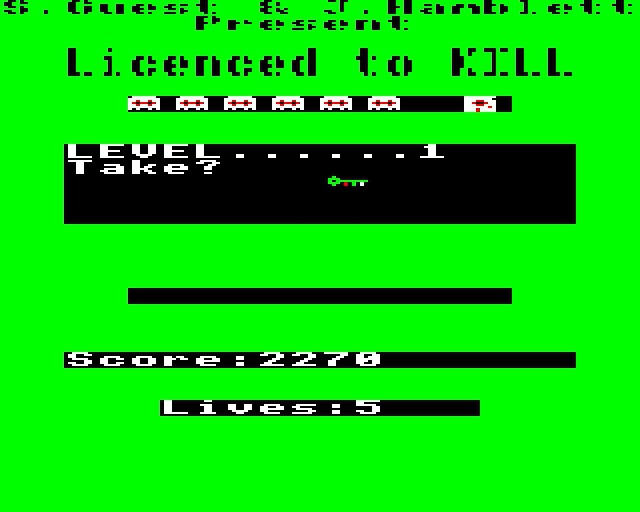
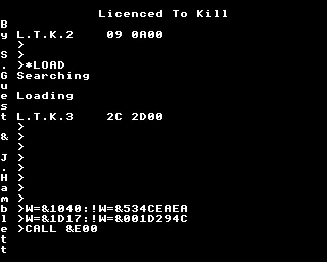

It started when I saw the recording of Ashens talk at the Norwich Gaming Festival 2016, in particular the part where he talks about Licence to Kill for the Acorn Electron.
That game really piqued my interest. Even more intriguing there was almost no informations about it on the internet. So I decided I would reverse engineer the game and figure out how it worked. In particular I wanted to know:
Let's get the easiest part out of the way. I expected the black screen to be some kind of copy protection mechanism. Nope. It's just drawing circles. For some reason they chose to program this part of the game in BASIC so drawing the circles on the title screen just takes forever.
Here's the code, in all its detokenized glory
10 VDU 23,220,137,82,186,124,56,36,82,137: FOR I=0TO 4: VDU 19,I,0;0;0;0;: NEXT : FOR I=300TO 0STEP -100: PROC circle(800,500,I,4,5,3): PROC gunfire: NEXT : PROC line(800,500,1200,500): PROC line(800,500,400,500): PROC line(800,500,800,900): PROC line(800,500,800,100): 40 DEF PROC circle(X%,Y%,R,T%,P%,C%): LOCAL J%,A,B,C,D,E: D=0.998026: E=6.27905195E-2: GCOL 0,C%: MOVE X%+R,Y%+C: FOR J%=1TO 100: A=R*D-C*E: B=R*E+C*D: PLOT P%,X%+A,Y%+B: PLOT T%,X%,Y%: MOVE X%+A,Y%+B: R=A: C=B: NEXT : ENDPROC
(I have omitted non-circle related lines from this, this is precious code, wouldn't want to violate Alternative Software's intellectual property)
Everything in the cassette and in-game instructions is correct (with one minor exception I'll describe later). You can find keys, the Master Spactrum, and all that jazz and win the game. The missing piece of the puzzle that seemingly stumped everyone playing the game (well, everyone who bothered to write about it on the internet, at least) is that the instructions omit some of the controls for the game. I'm here to fix that:
That's it. Inside the doors you will find keys that you can use to open locked doors.
In some of the rooms you will find computers:
If you enter a computer room with a unused tape you will get a mastermind-like minigame:
You have to finish this minigame in 75 seconds (the instructions say 115 seconds but that's because the person who wrote that doesn't know that a minute is only 60 seconds, not 100 seconds). If you don't guess the 6 digit code in the time limit you will be booted out of the room and can re-enter and try again.
If you do guess the code the tape will become used. Repeat this process 6 times, then collect the disc and proceed to the Master Spactrum room:
 
Finally collect the starter key
and proceed to the C-7¾ room and you will get the coveted end-game cutscene:
Ok, the game is really hard, maybe the cheat code mentioned on the cassette tape will help with that, right?
To turn on cheat mode you have to press simultaneously the keys AFCLO while the "Press space to start" text is scrolling.
Note that if you are playing on an emulator this may not work because of key shadowing in your keyboard. If you have a gaming keyboard: congratulations, your purchase finally paid off!
I'm not sure what that's supposed to mean and how they expected the player to guess but that's how it is. If you do that correctly the game will try to give you an epileptic seizure
If you survive that, you can press BRD (simultaneously) in the game to gain one extra life, all the way up to 255. As far as I can tell this are the only effects of cheat mode.
So the access code minigame is really hard, getting around the building is basically impossible and the cheat code is completely useless and dangerous to your health. How do you actually beat this game? Here's how to really cheat.
First load the tape like this:
>*LOAD >*LOAD >130 END >RUN
This will run the instructions screen but at the end return you to the prompt instead of loading the game. Once you are back at the prompt:
>*LOAD >*LOAD >W=&1040:!W=&534CEAEA >W=&1D17:!W=&001D294C >CALL &E00
(yes you have to execute *LOAD twice both times, it's not a typo)
The first line starting with W= disables death (but only in the game), the second one changes the access code minigame so that any code is accepted.
.{kind=link}